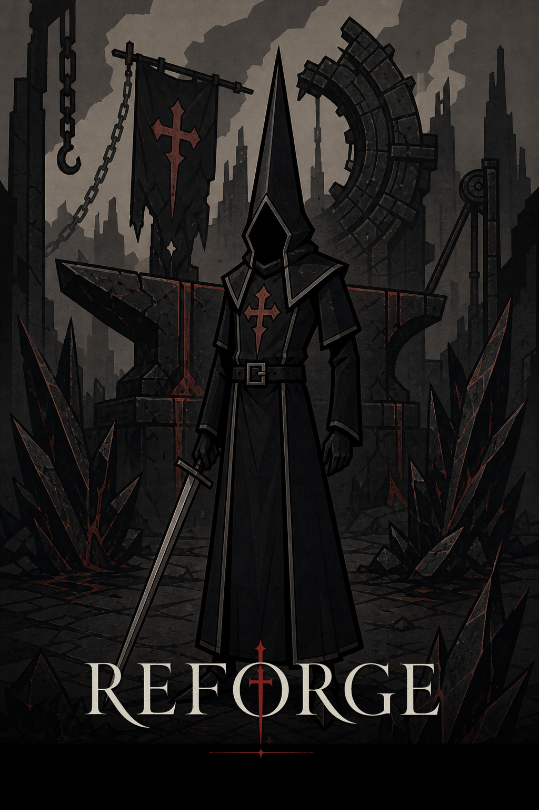
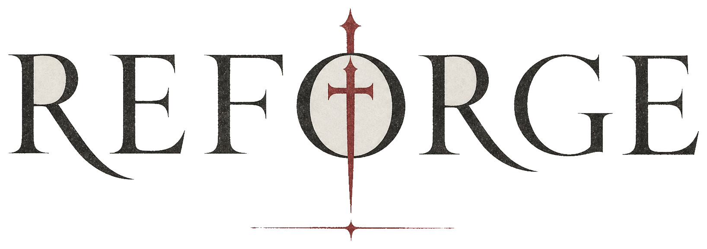
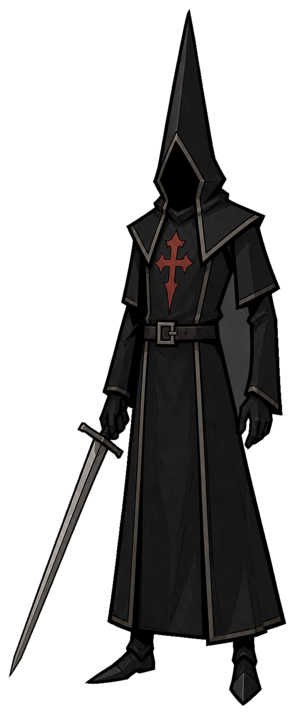
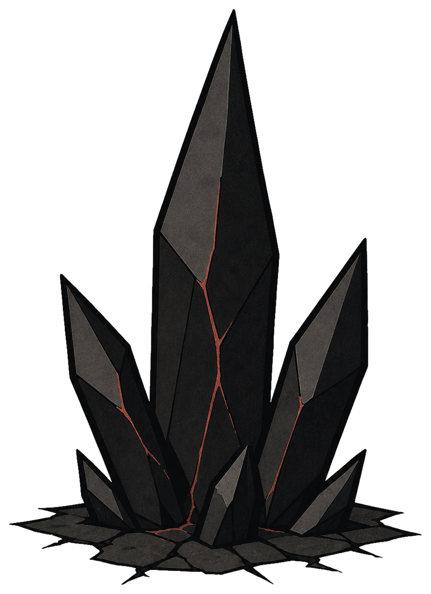
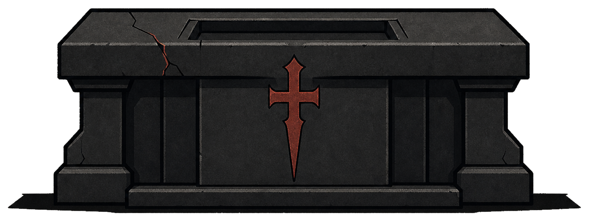
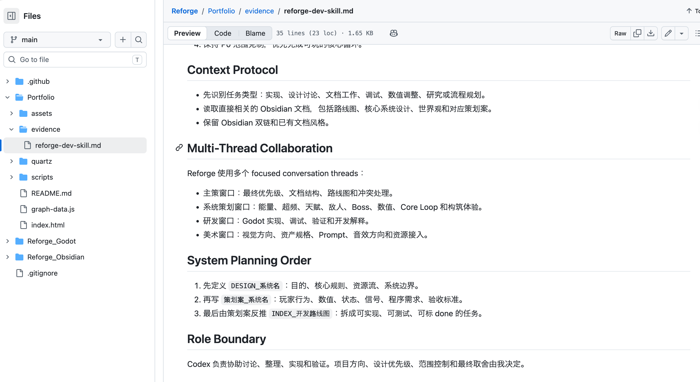
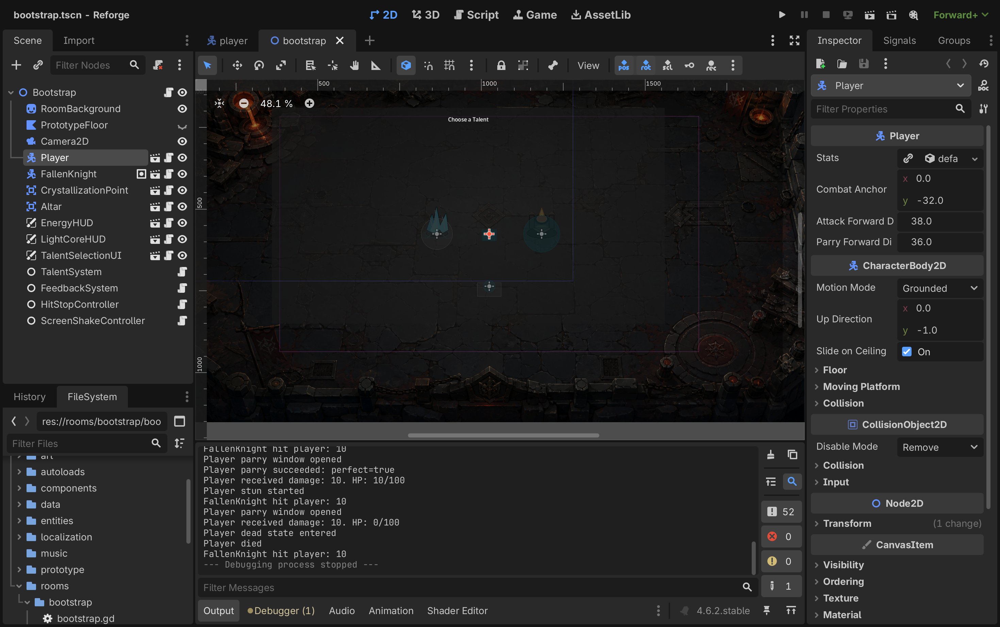

01 / SECTION
游戏 Demo
Playable Proof
这里展示《Reforge》的 P0 Core Loop、核心玩法、游戏演示和 Win / Mac Demo 下载入口。
点击打开
欢迎来到我的个人网页，感谢您的浏览。
我正在寻找游戏策划实习机会。这个网页记录了我从 0 到 1 独立开发游戏《Reforge》的过程，也整理了我在 AI 协作、系统设计、文档管理和项目推进中的一些实践。
《Reforge》是一款 2D 俯视角动作 Roguelike。目前项目已经确定核心机制，完成了 P0 Core Loop，并围绕游戏机制建立了对应的设计文档、策划案和开发路线图。

对一名合格的游戏策划而言，重要的不只是提出玩法想法，还要能把想法通过引擎做成可以验证、可以体验、可以调整的原型。《Reforge》使用 Godot 引擎开发，目前已经验证了核心循环和核心玩法。
我使用 Obsidian 将策划、研发和美术串联起来。DESIGN_ 记录核心系统规则，策划案_ 记录实现范围和验收标准，INDEX_开发路线图记录任务拆分和进度，ART_ 记录美术方向与资产规格。双链让这些内容形成互相引用的项目知识库。
我通过 Codex 建立了一套游戏生产流程：创建 Reforge 专用 Skill，拆分主策、系统策划、研发、美术等对话窗口。讨论、设计、文档和工程实现由此形成连续流程，我负责方向、优先级和最终取舍。
这里展示《Reforge》的 P0 Core Loop、核心玩法、游戏演示和 Win / Mac Demo 下载入口。
这里展示 Reforge 的 Obsidian 双链文档体系，包括核心设计、世界观、策划案和开发路线图。
这里展示我如何通过 Codex、专用 Skill，以及主策、系统策划、研发、美术多窗口分工建立游戏开发工作流。
这里记录我的 vibe coding 项目、游戏拆解，以及学生生涯中的奖项、学生工作和活动经历。


《Reforge》是一款 2D 俯视角动作 Roguelike，核心参考为《只狼》的前期弹反手感、《杀戮尖塔》的构筑深度，以及《哈迪斯》的房间推进结构与俯视角动作读感。
目前 P0 已经跑通核心循环：玩家进入房间，与敌人战斗，通过弹反获取能量；获得能量后产生资源决策分支——消耗能量触发超频强化动作，或保留能量完成清房；清房后剩余能量结晶为光核，攒满后在祭坛触发三选一天赋，让本局构筑继续推进。

由于 P0 阶段暂未制作正式美术资产，目前场景与角色使用 itch.io 免费资源，敌人暂时复用玩家角色资产，用于验证玩家行为、战斗资源流和 Core Loop。以下两段演示分别呈现即时战斗操作与清房后的构筑推进。
展示八方向移动、普通攻击、闪避和弹反，说明当前原型已经具备基础动作操作与攻防交互。
展示清房后将剩余能量结晶为光核，通过祭坛选择天赋，并补充呈现当前系统菜单与原型完成度。

这里展示 Reforge 的 Obsidian 双链文档体系。DESIGN_核心系统设计文档 是核心机制总纲；每个具体机制都有对应的 DESIGN_ 文档记录稳定规则和系统边界；策划案_ 负责执行层内容；INDEX_开发路线图 负责整体项目规划。
双链让这些内容形成互相引用的项目知识库，也让设计、研发、美术和进度管理连接成一个可追踪的工作体系。
稳定机制与系统边界。核心系统设计文档是总纲，每个机制有对应的设计文档。
执行层：实现范围、数值、状态、信号、程序需求和验收标准。
整体项目规划：阶段目标、任务拆分、优先级与完成状态，链接到对应文档。
美术方向与资产规格：尺寸规则、Prompt 规范、原型表现与资源接入。
这里展示我如何通过 Codex 建立 Reforge 的协作流程，把想法讨论、系统设计、策划案、路线图、Godot 实现和复盘记录连接起来。
我为 Reforge 创建了专用 Skill，并将对话分为主策、系统策划、研发、美术等窗口。Codex 参与讨论、整理、实现和验证，我负责方向、优先级、范围和最终取舍。
总体方向、核心机制、优先级把控与文档总控。
能量、超频、天赋、怪物、Boss、数值、Core Loop 和构筑体验；将设计文档转化为可执行策划案。
按策划案推进 Godot 实现、测试、Debug、代码解释和开发日志。
美术方向、资产规格、Prompt、原型表现和资源接入。
能量系统是 Reforge P0 Core Loop 的资源核心。它连接弹反、超频、清房结晶、光核进度和祭坛天赋。
这个案例展示一条机制如何从设计讨论进入文档、任务和工程验证。
先确定能量在 Core Loop 中的作用：弹反获取能量，战斗中消耗能量超频强化动作，清房后把剩余能量结晶为光核进度。
写入 DESIGN_能量系统，明确能量来源、消耗、超频关系、清房结晶和系统边界。
扩展为策划案_能量系统，补充数值、状态、信号、程序需求和验收标准。
根据策划案反推 P0-3 任务，拆成可以实现和验收的能量获取、消耗、显示、结晶和光核挂接。
研发窗口进入 Godot 实现，通过测试和试玩确认资源流能支撑房间战斗与构筑推进。
展示材料先保留两类最有说服力的证据：一类说明我如何给 Codex 建立项目协作规则，一类说明策划案最终进入 Godot 工程验证。

这个 Skill 定义了 Codex 在 Reforge 项目中的协作方式，包括文档层级、设计流程、研发规则、Obsidian 回写和 Godot 实现约束。

Godot 工程用于验证策划案中的系统设计。截图展示了 P0 房间、节点树、HUD、交互物和调试输出，核心系统已接入可运行原型。
这里记录我的 vibe coding 项目、游戏拆解，以及学生生涯中获得的奖项、学生工作和活动经历。这些内容用于补充展示我的想法验证、学习能力、组织表达和项目推进能力。
任何学习都需要复盘，翻译尤其如此。HonYaKu-Review 会把自己写出的译文当作复盘对象，依据目标语言本土媒体的自然表达习惯，指出不符合目标语言、读起来不自然的地方，并通过简短讲解说明词义、错因和问题模式。
这份文档记录我投入较多的游戏作品、游玩时长和简短体验评价，覆盖动作、Roguelike、开放世界、经营生存、合作和叙事推理等类型，也链接到已完成的 Dead Cells 与 Sekiro 拆解。
本文分析《Dead Cells》的 Core Loop、房间节奏、局内构筑和高风险高收益结构。拆解结论用于反推 Reforge 的房间推进、能量系统、天赋选择和光核祭坛节奏。
本文聚焦《Sekiro》的弹反体验链路，分析敌人前摇、玩家输入、成功反馈、失败压力和反击窗口。拆解结论用于校准 Reforge 的弹反手感、锈犬读招和 P0 反馈事件。
成绩全院综合第一，获得 2023 年国家奖学金。该奖项用于证明我的学习能力、自我管理能力和持续投入一件事的稳定性。
本人兴趣广泛，愿意学习新事物。平时接触剑道、羽毛球、摄影、游泳、动漫等兴趣内容，这些经历也让我保持对新领域的好奇心，并持续训练观察、表达和学习能力。